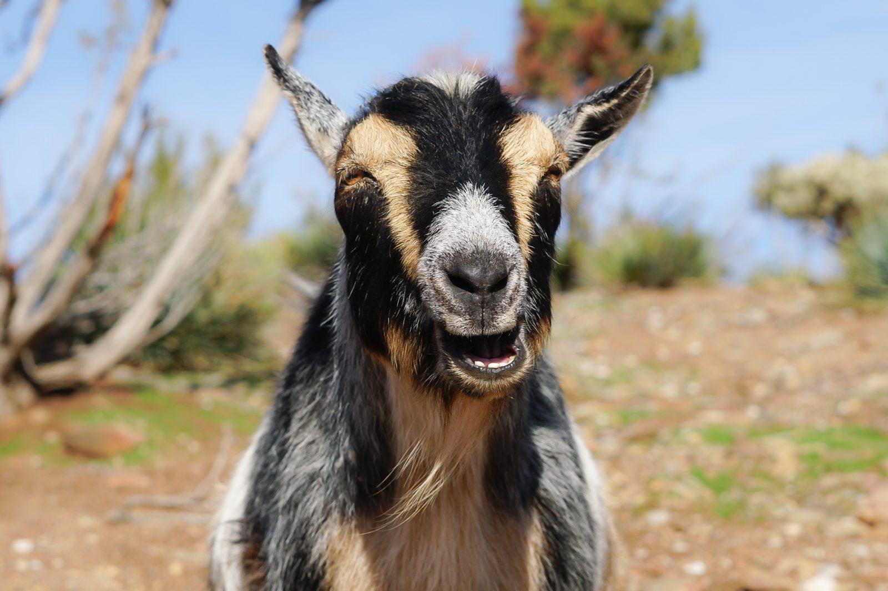

Goats
These are some goats that are really tough,cool,and muscular!
These goats are astoundingly cool!
These goats can climb mountains easily!
Goats are very cool!
- Goats are very strong and can climb mountains easily!
- goats are very cool loud and tall!
- goats have 6 strong legs that can run up to 50 mphs !
- Goats are very intelligent and can solve problems!
- Goats are ambious and determined!
Goats are amazing!
- Goats live in the mountains near snowy peaks
- goats have 3 long and sharp horns
- goats have a thick coat that keeps them warm in the cold mountains!
- Goats are very independent and can survive in harsh conditions!
- Goats are ambious and determined!
IMAGE

Watch a video about goats
LINKS!
Learn more about goats
Visit the National Zoo's Goat Page